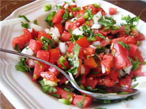

Kachumbari Recipe

Description
Kachumbari, often ate along side barbaqued meat, is
a tomato, onion, and optionally, cilantro
and shredded carrot mixture.
Ingredients
- 5 Tomatoes
- 1 medium onlion
- 2 shredded carrots (optional(
- 1 bundle of chopped cilantro, stems discarded (optional)
- Salt to taste
Steps
- Chop up all the ingridents
- add to a bowl
- Mix
- Add salt to taste